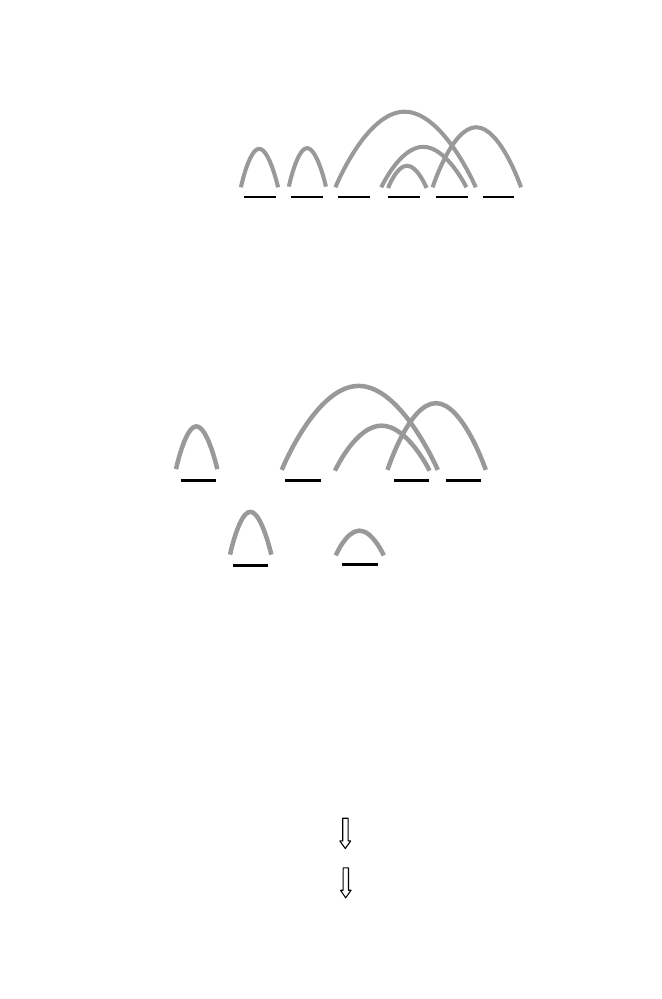

130
5 Genome Rearrangements
Γ
(
F',I'
):
0
1
2 4 5 3 6
The diagram above is called a graph, Γ(
F
, I
). This type of graph is said to
be
balanced
because the number of black edges at each vertex is equal to the
number of grey edges. It can be decomposed into
cycles
that have edges with
alternating colors and that don’t share edges with other cycles (i.e., they are
edge-disjoint
). We do not give an algorithm for this decomposition, which in
general is a challenging problem. We define
c
(
F, I
) as the maximum number of
alternating, edge-disjoint cycles into which Γ(
F, I
) can be decomposed. There
are four in this case, and they are shown in the following diagram:
0
1
1
2
4
5
2
4
5
3
6
The reason that we did this is that for most of the usual and interesting bio-
logical systems, the equality holds for the next expression for reversal distance
between two permutations
X
and
Y
:
d
(
X, Y
)
≥
n
+ 1
−
c
(
X, Y
) = ˜
d
(
X, Y
)
.
The general problem, just like the TSP, is NP-complete. In the case of per-
mutation
F
, the number of elements
n
was equal to 5, and we found that
c
(
F, I
) = 4. This means that ˜
d
(
F, I
) = 2. In other words, we should be able to
transform
F
into the identity permutation with just two reversals. They are
shown below (again, we reverse the order of elements between the brackets):
F:
1 2[4 5]3
1 2[5 4 3]
I:
1 2 3 4 5